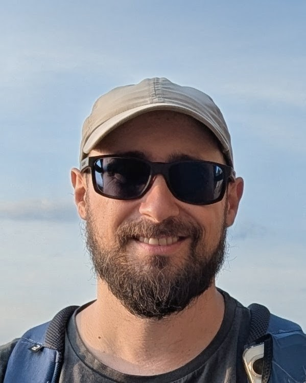

I am a Staff Researcher Scientist at Meta Reality Labs, where I lead a small team of researchers with focus on physics-based forward and differentiable rendering. Before that, I was an Assistant Professor in the Computer Science Department at Universidad de Zaragoza (Spain). I obtained my PhD in 2015 from Universidad de Zaragoza. I am a Eurographics Junior Fellow, and the recipient of the Eurographics Young Researcher Award (2021) and the Eurographics PhD Award (2017). My research focuses on physics-based light transport, including modeling, simulation, and imaging. I am passionate about understanding how light propagates and interacts with matter, and finding ways to simulate it.
